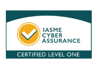
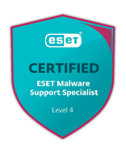
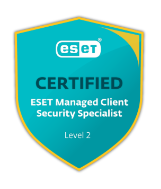

Relationship First
We get to know your business, so you deal with people who understand how you work, and you’re never just a ticket number.
IT Support for Businesses Across Telford, Shropshire, the West Midlands and Beyond
Straight-talking advice and practical support that takes the weight off your shoulders.
From one-person operations to growing teams – if your IT is the last thing you need to be worrying about, we can help.
Book Your Free IT Health CheckYour systems and software are there to support you. When they work properly, you shouldn’t need to give them a second thought.
But when something goes wrong, productivity can quickly grind to a halt, eating into your day and giving you another thing to manage.
It’s really not the time to be left chasing answers, waiting for problems to be resolved or wondering whether the advice you’re getting is really right for your business.
At Amery IT, our priority is to understand your business, how you work and what you need from your technology. That way, we can offer you sensible advice and practical solutions that work for you.
We get to know your business, so you deal with people who understand how you work, and you’re never just a ticket number.
When something goes wrong, we get it sorted. You won’t be left chasing answers or trying to work things out alone.
There’s no one-size-fits-all answer. We ask questions first, then recommend the support and solutions that fit your business.
If you don’t need something, we’ll tell you. And if there’s a phased way to achieve what you need, we’ll talk you through it.
We monitor, review and keep pace with changing technology and security risks to help prevent disruption before it happens.
Amery IT was born out of frustration with the way IT support was often delivered.
The focus seemed to be on selling more licenses, hardware or services rather than asking what the client genuinely needed. That never sat comfortably with me.
I believe your IT provider should feel like an extension of your team: someone who understands your business, gives you straightforward advice and helps you make informed decisions. Sometimes that means investing in new technology. Sometimes it means saying, ‘What you have is perfectly good for now.’
That principle has shaped Amery IT from the start.
As our business grows, we’re committed to keeping the same personal approach, sensible advice and strong relationships that got us here. Our team combines technical expertise with genuine people skills. We believe the ability to listen, communicate clearly and build relationships is just as important as knowing the technology.
Takes a big weight off our shoulders.
Ben Wootton
Saved me both time and money on many occasions.
Kim Kelly
Thorough, knowledgeable and explained everything to me in a way that I could understand without being patronising.
Lucy Edgar
My business is in safe hands.
Maisy Owen



From everyday IT problems to security, cloud services and business continuity, Amery IT provides practical support for the technology your business relies on.
We work with the systems that are right for you, keeping things running, protected and easy for your team to use.
When something stops working, you need it sorted. We provide responsive support, proactive monitoring and real people to call on, so you can get back to your working day.
Good security protects your business without getting in the way. We assess your risks, your people and your day-to-day operations, then put sensible protection in place.
Whether your business runs on Microsoft 365, Google Workspace, iWork and iCloud or a mixture of tools, we’ll make sure they’re secure and set up to suit your business.
We look after the Wi-Fi, networks and infrastructure so your team can stay connected and keep working. If something needs doing on site, we’ll come to you.
We make sure the information your business relies on is properly backed up and help you put sensible plans in place so you know what to do if a problem occurs.
We identify gaps in your security, explain what needs attention, and help you put the right measures in place to work towards Cyber Essentials certification.
Transparent monthly pricing with no hidden charges when you ask for help. Choose the level of support that’s right for your business. If you need something slightly different, we’ll tailor a package for you.
Our standard packages:
Essential monitoring and updates, plus someone reliable to contact whenever you need help.
Bed & Breakfast, plus email, security, backup and network management to keep your business running smoothly.
Complete IT support, including on-site help, consultancy and supplier liaison for businesses that want everything taken care of.
Whether you’re looking for a new IT partner or would like to understand where your current setup stands, we keep it simple.
Tell us about your business, your current setup and what you’d like us to help with. If it’s useful, we’ll include a Free IT Health Check so that you have a clear picture of where things stand right now.
We’ll look at what you need from your IT support and recommend the level of help that makes sense for your business, with clear pricing and no unnecessary extras.
Once you’re ready to go ahead, we’ll agree on a start date and handle onboarding. If you’re moving from another provider, we can work around existing contracts, licenses and commitments to make the transition as smooth as possible.
Based in Telford, we support businesses across Shropshire, Staffordshire, the West Midlands and beyond.
Tell us a little about your business and what you need help with, or book your Free IT Health Check.